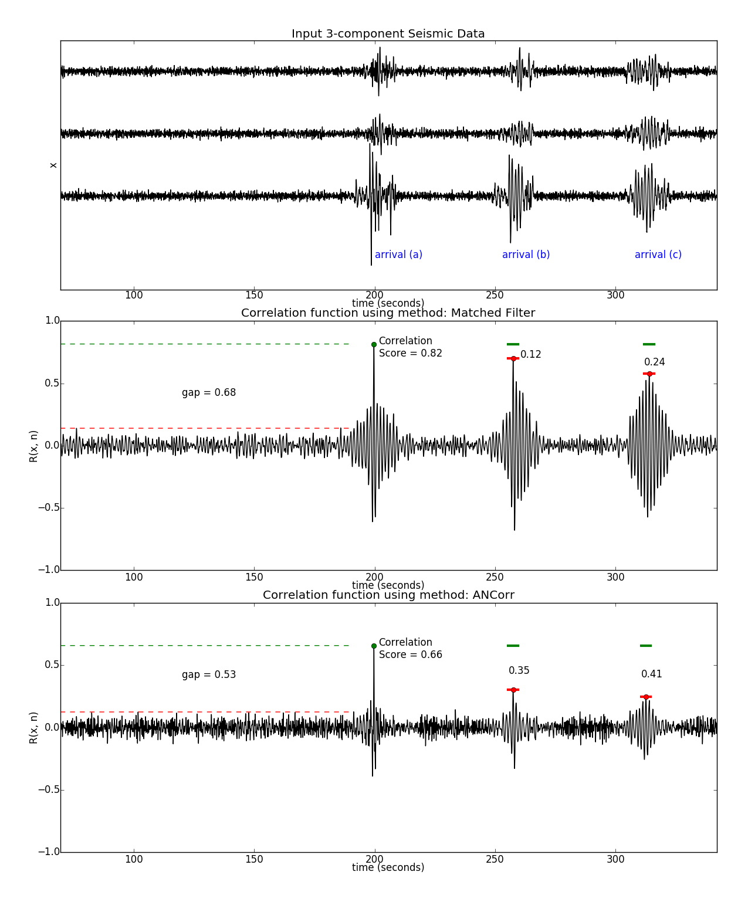

This article describes a new method of seismic signal detection that improves upon the conventional waveform correlation method. Recent studies suggested that a significant limiting factor in the application of waveform correlation to regional and global scale monitoring is the false alarm rate. The false alarms do not originate from detections on noise but rather from seismic arrivals with unrelated source locations. This article presents results from an approach to waveform correlation that exploits techniques from signal processing and machine learning to improve the accuracy of detecting seismic arrivals. We modify the detection model for waveform correlation such that transient signals from noncollocated seismicity are considered when designing the detectors. The new approach uses waveform templates from known catalog events to train a supervised machine learning algorithm that derives a new set of detectors to represent the unique characteristics of the template waveforms; these new detectors maximize the likelihood of detecting only the desired events, thereby minimizing false alarms. We train a waveform correlation template library for a single three‐component seismic monitoring station. We then review results from applying the new detectors, known as alternate null hypothesis correlation (ANCorr) templates, to a test set of seismic waveforms. We compare ANCorr results with those from application of the conventional waveform correlation matched filter technique.
Alternative Null Hypothesis Correlation: A New Approach to Automatic Seismic Event Detection
